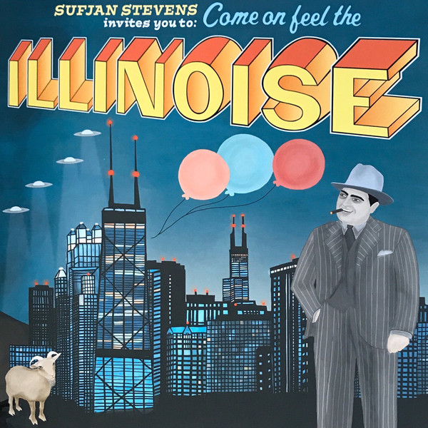

Illinois - Sufjan Stevens
Created: 2021-05-27 | Modified: 2021-07-18

A really nice folksy indie album from multi-instrumentalist and creative Sufjan Stevens.
Illinois is rich in instrumentation, well though out, and deliberate. If my memory serves me correct, it features only organic instruments. No synths, or what have you (bass guitar, yes, but I count that as organic, as it's just being amplified).
The pinnacle (and fullest representation) of the album comes at Come On! Feel Illinoise! The song is really a two parter, starting as a fully orchestral and colorful array, merging in the middle to a more downbeat, lyrically depressive song.
Overall, very nice.
Favorite song: Come On! Feel the Illinoise!
See also:
 2020, 2021 (C) Brody Rethy. All rights reserved.
2020, 2021 (C) Brody Rethy. All rights reserved.